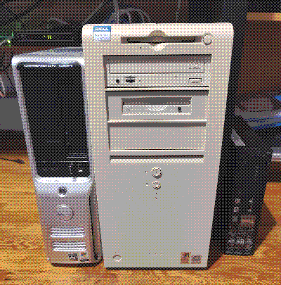

My Collection
I love video game collecting! I have been involved in the hobby for about 5 years now. Welcome to the section where I brag about it all.
I am more interested in collecting the things I like, rather than collecting for the sake of collecting things. My favorite console is the Super Nintendo by far. Most games on there are in that sweet area of challenging but not ridiculously challenging like on the NES. I also love that era of pixel art. Platformers are my favorite genre, and the SNES has so many of them. I also love the RPGs on the console, such as Chrono Trigger and Final Fantasy 6.
Nintendo
I have every Nintendo home console, except for the rarer ones like the Virtual Boy, and add-ons like the 64DD. I feel like these purchases fall in the category of really cool to own, but something I'd never use. I want to purchase these at some point, but currently I see no justifiable reason to do so.
My most difficult console to acquire was the Gamecube, because for some damn reason everything Gamecube is ridiculouly expensive. I specifically wanted a Xeno-chipped Gamecube so I could seamlessly run Swiss with a burnt disc. My main reason for the Gamecube purchase was for GBP, as I already owned a Wii with Gamecube support.
As for handhelds, my favorite has to be the Nintendo DS. It was the handheld I grew up with, and I have a plethora of memories with it. I loved New Super Mario Bros. and M&L Bowser's Inside Story. I still return to the console today to find some hidden gems I missed out on, such as The World Ends With You and Elite Beat Agents.
I, too, have every Nintendo handheld, except for the original Game Boy Color, which honestly I'm just too lazy to purchase right now. I'll get to it eventually! The hardest handheld that I acquired for a decent price was the later model GBA SP.
As Nintendo is my favorite franchise, I am sure to own a lot of duplicate consoles. My most amount of duplicates is the DS/3DS line, with there being 10 systems in total that I own. It's a bit unfair to group them all together, but it's cooler to view tham all as the same system so I could say I have 10 of them. =)
PlayStation
I have every PlayStation up to the PS3. I am not a die-hard fan for PlayStation as I am for Nintendo consoles. PlayStation has some games that I couldn't miss out on, so I had to pick up the consoles eventually.
My first foray into the PlayStation line was buying a PS3. I was specifically looking for a fat model, because it was the easiest model to softmod. I wanted to be able to play the Scott Pilgrim video game, which at the time was taken off every console store. The only way to play it on original console was to mod and illegally download the game onto it. I also bought it for Persona 5, as I have always wanted to play that game too! I am glad I bought a PS3, because it eventually opened up the doors for me to buy its older brothers.
I bought the PS1 shortly after, as it was relatively cheap and a "why not" purchase. You could argue that I could've played PS1 on my modded PS3, but I was looking for a way to play the games on the original hardware without any emulation or whatever (I am an authenticity freak). I wanted to hear that awesome nostalgia-oozing PS1 startup.
My most current PlayStation purchase is the PS2, and honestly I haven't gotten much use out of it. I played the games I wanted, such as Parappa the Rapper and Sly Cooper. I am unsure what else to play on it, maybe I should look into some more titles to play. My PS2 is also modded with a harddrive to SD card adapter, so I can play games off an SD card through the HDD peripheral.
Sega
Unfortunately, I am a bit dry in the Sega department! The only console I own is the Genesis, which was actually a fairly recent purchase. Along with it I bought Sonic 1, 2, and 3. It took me a while to buy a Genesis because I had a tough time finding games I wanted to play on it besides Sonic. Once I discovered Rocket Knight and Gunstar Heroes, I decided to take the plunge and buy the Model 1 Genesis.
It has been in the back of my head to own more Sega consoles, most notably the Dreamcast for Sonic Adventure. I just lack the space for a Dreamcast right now, and I could easily play it on my Gamecube instead. It'll happen eventually, just not for a while.
Xbox
This is a sad section, I am just not a fan of Xbox. The console's exclusives, like Halo and Gears, just doesn't touch me the same way. I own the games, too! I've tried them but they just don't appeal to me. It doesn't help that most Xbox games are released on Windows (which makes sense, cuz Microsoft). I own every Xbox up to the Xbox One (the one released in 2013, these names are confusing). The Xbox 360 was the Xbox I grew up with, and it was basically a machine that played Minecraft and BattleBlock Theater. I then bought the Xbox One a couple of years after, and the only game I played on it was... Minecraft. You can understand why I'm not necessarily an Xbox person.
I ended up getting an original Xbox by someone just giving it to me (complete in box, by the way, it was definitely a surprise). I appreciate that it happened, because I genuinely don't think I would have went out of my way to buy the console. I mean to softmod it eventually, but I have absolutely no clue what I would play on it besides Spongebob BFBB. Its been on my procrastination list for quite a while at this point. I'm surprised I even got the motivation to remove the clock capacitor.
Computers
I love legacy computers! I am a huge fan of older Windows software, pretty much everything from 3.X to 7. Generally speaking, I just love computers, whether old or new. I enjoy obtaining junk computers and repurposing them with Linux, or messing with them by installing legacy Windows. I still have yet to dapple in the world of legacy Linux distros, I should definitely check it out sometime.
One of my daily drivers is my Dell Optiplex GX110 with Windows 98 installed. Yes, I said daily driver (most of the time). I find ways to use it, whether it be to write stuff or playing older games. I enjoy how minimalistic 98 is, there is nothing crazy going on, and modern software doesn't work with it, which is a win cuz then I'm not distracted. When it comes to surfing the web, I use my Dell Dimension C521 with XP, as it is complicated to get 98 up and running to work with the https protocol. It basically locks me out of the "modern" web, so I stick with XP for that.
Though I don't use them often, I also have a few older MacBook laptops laying around, each of them on MacOS 10.6 and 10.8. I typically don't use them much, besides exploring the older OS they have.
I don't feel like making a separate section for it, so I'll talk about legacy iOS. I have an iPad 1 that I use daily for web browsing and webcomic reading. I grew up with this iPad, so in a way it gives me a bit of nostalgia when using it. I also just love the look and feel of older iOS versions. I hate minimalism. =)